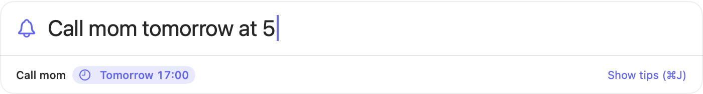

Set a quick reminder in two seconds
Set a reminder on your Mac from any app: press the keyboard shortcut, type what to remember and when, and get back to what you were doing.
⌃⌘R → type → Enter

Call mom tomorrow at 5→Tomorrow 17:00Take the tea bag out in 90s→in 90 secondsTeam lunch this Friday at noon→Fri 12:00Standup every weekday at 9:30→Weekdays 09:30Pay rent on the 1st every month→Monthly, 1st
- Plain EnglishWrite the time the way you'd say it, from “tomorrow at 5” to “in 90s” for a quick timer, or “every weekday at 9:30” for one that repeats. Tock shows what it understood before you press Enter.
- Just a menu bar iconNo Dock icon and no window to manage. A clock in the menu bar, and that's it.
- LightweightA small native Swift app. No account, no sync, nothing sent anywhere.
Install
Tock is free. It runs on macOS 13 Ventura or later, on Apple Silicon and Intel Macs.
- Download Tock with the button at the top of this page, or here.
- Open it and drag Tock into Applications.
- Open Tock. Look for the clock in your menu bar, then press ⌃⌘R to add your first reminder.
“Apple could not verify Tock”? This build isn't notarized yet. Open it once, then go to System Settings → Privacy & Security and click Open Anyway. Or run this in Terminal:
xattr -dr com.apple.quarantine /Applications/Tock.appQuestions
- Is Tock free?
- Yes. Free to download and use, with no account and no in-app purchases.
- Which Macs does Tock run on?
- Any Mac with macOS 13 Ventura or later, on Apple Silicon or Intel.
- How is Tock different from Apple Reminders?
- Tock is a lightweight alternative to Apple Reminders for quick, timed reminders on your Mac. You add one with a keyboard shortcut from any app, in a single line of plain English, without opening an app or filling in a form. It lives in the menu bar and doesn't sync or need an account.
- Can Tock set repeating reminders?
- Yes. Type how often in plain English, like “every day at 8”, “every weekday at 9:30”, “every other Monday”, “pay rent on the 28th every month” or “every 8 hours”. Completing a repeating reminder sets its next time.
- Does Tock send my reminders anywhere?
- No. Tock doesn't use the network. Your reminders are saved in a file on your Mac.